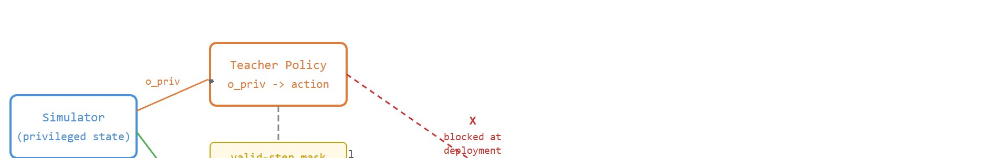
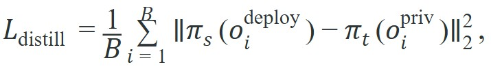
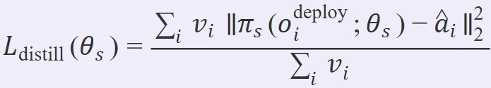

"The teacher knew where the ball was. The student learned to catch it anyway."
A Patient Distillation Engineer
This section assumes familiarity with asymmetric actor-critic training from section 17.4, where the critic sees privileged state while the actor sees only deployable observations. The distillation pattern introduced here recurs in section 20.3 (domain randomization and RMA), where a privileged adaptation module is similarly distilled into a deployable history encoder, and in section 21.3 (DAgger), which formalizes the interactive relabeling strategy mentioned at the end of this section.
A legged robot trained in simulation knows the exact terrain height under each foot because the simulator hands it over for free. Deploy that robot on concrete and the free data vanishes instantly. Privileged-information distillation is how many state-of-the-art locomotion systems close this gap: a teacher policy trains with simulator secrets, then transfers its judgment to a student that survives on onboard sensors alone. With massively parallel GPU simulators now producing millions of steps per second, teams can afford to run this two-stage pipeline at scale, and the resulting policies transfer to hardware without sim-to-real collapse. You will build the distillation contract, audit the observation split, and evaluate the student under deployment-legal conditions.
Imagine handing a student pilot a map that shows every hidden crosswind in the room. The pilot aces the test. Then you take the map away the instant they touch real controls. That is the bargain privileged-information distillation strikes. Get it wrong, and the policy that looked flawless in simulation falls over on its first step on concrete. For this to hold up, the training artifact must version four things together: simulator fidelity, Proximal Policy Optimization (PPO) rollout semantics, reward terms, and the reset distribution.
This section develops the distillation contract for fast simulator-trained policies. The teacher is trained or evaluated with privileged state such as terrain heights, contact impulses, object poses, or exact base velocity; the student learns to imitate useful teacher actions from deployable signals such as proprioception, commands, history, and exteroception. "Teacher-student" names the two roles in this pattern, and "privileged-information distillation" names what passes between them: the teacher's privileged-state advantage is distilled into action targets the student can learn from its own deployable observations. The rest of this section builds, audits, and evaluates exactly that contract. Figure 17.5A captures the core asymmetry: the teacher reads simulator secrets that simply do not exist on real hardware, so the student must learn the same policy from what the robot can actually sense.
The key question is practical: which information is legal at deployment, and how do we prove that the student evaluation uses only that legal interface? Figure 17.5B traces the full pipeline that answers this question, from privileged teacher inputs through the valid-step mask to the exported student, and shows where the teacher-to-deployment path is deliberately blocked.

The teacher may see the simulator's answer key, but the student must pass the exam without it. The audit question is whether privileged information shaped the target action without leaking into the deployed observation tensor.
A distillation objective that reduces to a single mean-squared term is

where $\pi_t$ is the privileged teacher, $\pi_s$ is the student, $o_i^{\text{priv}}$ includes simulator-only information, and $o_i^{\text{deploy}}$ contains only signals available on the robot.The formula is easy to write and easy to misuse. The batch must cover the same command, terrain, contact, and disturbance distribution used for evaluation, and the loss should be reported alongside closed-loop student performance, not as a standalone success metric. To see why this matters at scale: in representative locomotion benchmarks (as of 2024), a student trained without any privileged teacher on rough terrain may need 50 million simulator steps to reach 60% success on a held-out panel; a student distilled from a teacher that observed exact terrain heights reaches the same threshold in under 5 million steps, a roughly 10x compression bought entirely by the quality of the supervision signal.
So far: the distillation loss is a simple mean-squared match between student and teacher actions, but it is only trustworthy when the training batch matches the evaluation distribution, when the loss is always reported alongside closed-loop success rather than alone, and when the resulting supervision quality (not just added compute) is what drives the sample-efficiency gain. The algorithm below turns those three requirements into concrete steps.
Input: privileged teacher policy $\pi_t(a \mid o^{\text{priv}})$ with parameters $\theta_t$; deployable student policy $\pi_s(a \mid o^{\text{deploy}})$ with parameters $\theta_s$; rollout buffer $\mathcal{D} = \{(o_i^{\text{priv}}, o_i^{\text{deploy}}, v_i)\}$ where $v_i \in \{0,1\}$ is the valid-step mask; learning rate $\alpha$; distillation epochs $K$
Output: student parameters $\theta_s^*$ whose policy $\pi_s$ acts from deployable observations only

The mechanism is two-stage: first train or select a teacher that uses privileged simulator state to produce strong actions, then train a student to match those actions from deployable observations. The final evaluation runs the student only, with privileged tensors removed from the actor path.
The 10x supervision speedup the theory promises only materializes if the imitation targets are clean, which is exactly what the valid-step mask guarantees, so the smallest worked example worth building is the masked loss itself.
Code Fragment 17.5.1 computes a tiny distillation loss. The mask keeps failed or invalid teacher steps from becoming imitation targets, which matters when the teacher is still imperfect.
# Compute a masked action-distillation loss for teacher-student RL.
# The student matches teacher actions only on valid rollout steps.
import numpy as np
teacher_actions = np.array([
[0.20, -0.10, 0.05],
[0.35, -0.08, 0.02],
[1.50, 0.90, -1.20],
])
student_actions = np.array([
[0.18, -0.12, 0.04],
[0.30, -0.10, 0.01],
[0.10, 0.05, -0.02],
])
valid_teacher_step = np.array([1.0, 1.0, 0.0])
squared_error = ((student_actions - teacher_actions) ** 2).mean(axis=1)
masked_loss = (squared_error * valid_teacher_step).sum() / valid_teacher_step.sum()
print(f"per-step error: {squared_error.round(4)}")
print(f"masked distillation loss: {masked_loss:.4f}")Expected output: the trace should show both per-step error and the masked loss. A distillation run that reports only average imitation loss can hide whether failed teacher states were included as targets.
The valid-step mask matters in embodied AI because a real robot has no undo. Suppose the student imitates a teacher action taken during a fall or a joint-limit violation. It then trains toward a behavior that ends in hardware damage or an unrecoverable configuration. Including unmasked fall steps can double the closed-loop episodes the student needs to reach deployment-level stability. In representative rough-terrain training runs, roughly 8% of rollout steps are typically fall or reset events, and each one injects a target that points directly away from balance. Filtering those steps is not optional hygiene. It is the difference between a student that recovers from perturbations and one that has learned, implicitly, that falling forward is acceptable.
Mechanically, the mask sets a per-step weight to zero for any rollout step tagged as a fall, timeout, or saturated-action event. The distillation loss is then a weighted average over surviving steps only, so the gradient update never sees the bad teacher moment. The denominator uses the sum of valid weights rather than total steps, keeping the loss scale stable as the fraction of masked steps varies across terrain difficulties.
Trace one gradient step through the masked distillation loss with three rollout steps. Teacher targets are step 1 = 0.40, step 2 = 0.10, step 3 = 1.30 (a fall). Current student outputs are step 1 = 0.30, step 2 = 0.05, step 3 = -0.20. The valid-step mask is v = (1, 1, 0).
Per-step squared error: step 1 = (0.30 - 0.40)^2 = 0.01; step 2 = (0.05 - 0.10)^2 = 0.0025; step 3 = (-0.20 - 1.30)^2 = 2.25. Without the mask, the mean would be (0.01 + 0.0025 + 2.25) / 3 = 0.7542, dominated entirely by the fall. With the mask the numerator is v.error = 1(0.01) + 1(0.0025) + 0(2.25) = 0.0125 and the denominator is sum(v) = 2, so the masked loss is 0.0125 / 2 = 0.00625. The single fall step would have inflated the loss roughly 120x; masking it out means the gradient pushes the student toward 0.40 and 0.10 only, and never toward the -0.20-vs-1.30 catastrophe that step 3 represents.
In Isaac Lab or MJX-style workflows, privileged observations are usually already present for asymmetric critics and diagnostics. The shortcut is to reuse those tensors for teacher training while maintaining a strict exported-student interface that contains only deployable observations.
The common mistake is to leave a privileged field in the student observation wrapper during evaluation. The run may look excellent, but the exported policy cannot reproduce it on hardware.
Distillation can fail even when the leakage audit is clean. If the teacher collected rollouts only on flat or easy terrain, the student's imitation targets never cover stumbling, recovery, or edge contacts. A student trained on this narrow distribution imitates smoothly in-distribution but collapses on the terrain that matters most. The fix is to collect teacher data across the full reset and command distribution, including adversarial perturbations, so the student sees recovery actions as explicit targets rather than gaps in supervision.
A low offline imitation loss does not prove the student policy is deployment-ready. This is wrong in embodied AI because small action errors compound over a closed-loop horizon: each slightly-wrong action moves the robot into a state the teacher never visited, so the next imitation target is extrapolated outside the training distribution. A student can score near-zero offline loss while collapsing on the first perturbation it faces on hardware. The correct mental model is that offline imitation loss measures fit to the teacher trajectory distribution, not robustness to the robot's own error-driven state distribution; closed-loop success on a held-out perturbation panel is the only credible deployment check.
A terrain-walking teacher may observe the exact height map under every foot, while the student receives proprioception, command history, and a noisy local height scan. The evaluation artifact should include a schema diff proving that exact terrain state was removed from the student's actor input.
ETH Zurich's ANYmal robot uses exactly this teacher-student pattern: a privileged teacher trains in simulation with direct access to terrain geometry and friction coefficients, then a student is distilled to act from a noisy proprioceptive history and a temporal convolutional belief encoder (a small network that compresses a short window of past sensor readings into an estimate of terrain and contact state, standing in for the terrain height the teacher had for free), the same adaptation pattern formalized under domain randomization and rapid motor adaptation (RMA). The deployed student, which never sees ground-truth terrain, has been reported to traverse alpine hiking trails and rubble zero-shot (deployed directly on the new terrain with no additional training or fine-tuning), in published field trials, a result that the privileged teacher itself could never have produced on hardware because its inputs do not exist there.
Privileged distillation is a tutoring session where the teacher can read the answer key, but the final exam confiscates it.
Distillation into foundation locomotion policies (2024-2025). Rather than distilling a single privileged teacher into a single student, recent work distills across many task teachers into one generalist student. Zhuang et al. (Berkeley Humanoid, 2024) trained a privileged teacher on a full-size humanoid with ground-truth contact wrenches and then distilled the policy into a proprioception-only student that zero-shot transfers to hardware, demonstrating that the distillation bottleneck is now data diversity rather than model capacity. Labs at ETH Zurich and CMU are scaling the same pattern to whole-body manipulation on legged platforms.
Differentiable and world-model-assisted distillation (2024-2026). When the simulator is differentiable (MJX, Isaac Lab with analytic gradients, or a learned world model), gradients can flow through the teacher rollout directly into the student, bypassing the action-matching loss entirely. Howell et al. (MJPC + MJX, 2024) showed that analytic gradient distillation converges in roughly one-tenth the steps of behavioral cloning for contact-rich tasks. This direction is active at Google DeepMind and NVIDIA Research as simulators become faster and more differentiable.
Privilege decomposition and adaptive history encoding (2025). Cheng et al. (Extreme Parkour, 2024, extended follow-on work 2025) showed that splitting privileged signals by their temporal bandwidth (fast contact impulses vs. slowly varying payload) and routing each through a matching encoder improves transfer on unstructured outdoor terrain. The open problem: can an online meta-learning loop at deployment time identify which privilege channel the current terrain demands most, and re-weight the student history encoder accordingly, without any privileged signal being present on hardware?
Can you list teacher inputs, student inputs, critic-only inputs, invalid-step masks, distillation loss, and the evaluation wrapper that removes privileged actor fields? If not, the distillation result is not deployment-safe.
A student that imitates a teacher's actions without ever facing the teacher's hardest moments is not a trained policy; it is a transcript of good weather.
The idea in this section becomes useful when privilege is treated as a controlled variable. A teacher may use more information, but every extra field must be named, justified, and blocked from the exported actor. Otherwise distillation becomes information leakage with a nicer name.
The disciplined approach is to evaluate three claims separately. The teacher claim says privileged state improves expert behavior. The imitation claim says the student matches useful teacher actions on valid states. The deployment claim says the student still succeeds when privileged actor inputs are removed.
The imitation claim can pass while the deployment claim fails, and knowing why saves wasted iterations. A student with low offline action-matching loss still fails closed-loop because small errors compound: each slightly wrong action shifts the robot into a state the teacher never visited, so the next target lies outside the training distribution. DAgger-style interactive relabeling breaks this loop by generating new states from the student's own rollouts, having the teacher label them, and turning recovery actions into explicit targets. Bootstrap with offline distillation; close the gap with interactive relabeling.
| Tool or Library | Role in the Topic | Builder Advice |
|---|---|---|
| Privileged teacher | Policy or expert with simulator-only state | Use it to generate strong targets, but log every field the teacher sees. |
| Deployable student | Policy with onboard observations only | Use it as the only policy in final evaluation and export. |
| Asymmetric critic (a critic network that sees privileged state even though the actor it trains does not) | Training-time value function with extra state | Use it to stabilize learning while keeping the actor interface deployment-safe. |
| Invalid-step mask | Filter for teacher falls, resets, or unsafe actions | Use it so the student does not imitate bad teacher moments. |
| Schema diff | Audit of teacher, student, and critic fields | Use it to prove that privileged information did not leak into the student actor. |
Each of those tools earns its place only if the schema diff in the last row can actually run, and that audit is only possible when the field partitions are written down explicitly, so a robust implementation starts with an observation schema manifest. The manifest makes leakage visible by listing teacher-only, student, and critic-only fields separately.
# Record the observation schema for privileged-information distillation.
# The exported actor must accept only fields listed under student_obs.
from dataclasses import dataclass, asdict
@dataclass
class DistillationSchema:
teacher_only: tuple[str, ...]
student_obs: tuple[str, ...]
critic_only: tuple[str, ...]
mask_rule: str
eval_wrapper: str
def as_row(self) -> dict[str, object]:
return asdict(self)
schema = DistillationSchema(
teacher_only=("exact_terrain_heights", "contact_impulses"),
student_obs=("joint_pos", "joint_vel", "command", "history"),
critic_only=("base_velocity",),
mask_rule="exclude falls, timeouts, and saturated actions",
eval_wrapper="student_actor_only",
)
print(schema.as_row())student_obs tuple is the deployed actor contract, while teacher_only and critic_only fields are allowed only during training.In Isaac Lab, observation groups are defined in ObservationsCfg as separate inner classes (e.g., PolicyCfg and CriticCfg). The common gotcha is that the exported actor config must explicitly set policy: PolicyCfg and nothing else; if you copy a training config directly to the deployment wrapper without stripping the CriticCfg reference, Isaac Lab silently concatenates both groups into the actor tensor, injecting privileged fields that were never meant to reach hardware. Verify before export by printing env.observation_manager.active_terms["policy"] and confirming no teacher_only field names appear in the list.
When a distilled student fails, decide whether the issue is teacher quality, state coverage, observation insufficiency, or leakage removal. A student that imitates well offline but fails closed-loop usually needs recovery-state data, history, or an interactive relabeling loop, not another blind epoch over the same expert states. This divergence between offline imitation loss and live success is called the deployment credibility gap, and closing it is typically the central engineering challenge in distillation pipelines of this kind.
Think of a navigation student who memorized every turn on a practiced route and can recite them flawlessly at home. The moment a detour sign appears, each slightly wrong choice leads to an unfamiliar street, and the next memorized turn no longer matches the actual junction. Small errors compound into complete lostness because the memorized sequence was fit to the original path, not to recovery from deviation. Low offline imitation loss is like a perfect recitation at the kitchen table; closed-loop success on a held-out perturbation panel is like actually driving the route under construction.
For privileged-information distillation, compare only construct-matched metrics that are co-computed in one pass on one configuration: same held-out seed panel, same deployable student wrapper, same command distribution, same perturbation suite, and the same success definition. Save teacher reward, imitation loss, student success, fall rate, schema diff, and leakage checks as one artifact.
Privileged-information distillation is useful when simulator secrets improve training targets and then disappear from the deployed actor. The student result is credible only when the evaluation wrapper proves that disappearance.
Design a privileged teacher for rough-terrain locomotion. List teacher-only fields, student observations, critic-only fields, mask rules, distillation loss, and the evaluation check that proves the student actor does not receive privileged state.
Beginner (weekend): Leakage audit for a CartPole distillation pair. Train a teacher policy in Gymnasium's CartPole-v1 that receives the full state (position, velocity, pole angle, pole velocity), then distill it into a student that receives only the two visual-proxy observations (position and pole angle). Use a simple behavioral-cloning loop in PyTorch and add an assertion that checks the student's obs tensor at rollout time never receives the velocity fields. The key challenge is building the leakage check so that it catches accidental concatenation early, before the student appears to train well on a contaminated input.
Intermediate (1 to 2 weeks): Privileged terrain teacher for quadruped locomotion in Isaac Lab. Define a rough-terrain Gymnasium-compatible task in Isaac Lab with two observation groups: a PolicyCfg that uses only IMU, joint encoders, and command signals (deployable), and a CriticCfg that additionally exposes ground-truth foot contact forces and sub-surface height samples. Train a PPO teacher with the asymmetric critic, then distill into a student using DAgger-style interactive relabeling on recovery states sampled from mid-episode perturbations. The key challenge is closing the deployment credibility gap: the student must match teacher success rate on a held-out perturbation panel run under the deployable-only observation wrapper, not just achieve low offline imitation loss.
Goal: see firsthand how a deployable student degrades when privileged inputs are removed, and how distillation recovers performance compared with leakage.
Tools needed: Python with Gymnasium (CartPole-v1), PyTorch, and a small MLP policy. No GPU required; the whole loop runs on CPU in minutes.
Steps: (1) Train a teacher with PPO or DQN on the full 4-dimensional observation (cart position, cart velocity, pole angle, pole angular velocity) until it reaches near-500 reward. (2) Define the student observation as the two "deployable" fields only (cart position and pole angle), simulating sensors that cannot measure velocity. (3) Collect 20k teacher steps and behaviorally clone the student on the 2-dimensional inputs.
What to vary: (a) the student observation set, including a "cheating" variant that secretly keeps all 4 fields; (b) the rollout collection policy, comparing pure offline cloning against one DAgger relabeling round using the student's own rollouts.
What to observe: closed-loop reward of the deployable 2-field student versus the cheating 4-field student versus the teacher. You should see the cheating variant nearly match the teacher while the honest 2-field offline student collapses on its first few perturbations, and one DAgger round noticeably narrowing the deployment credibility gap. Add an assertion that prints the active observation indices to prove the deployable student never receives the velocity fields.
This section turned privileged-information distillation into a deployment-safe schema: teacher-only fields, student fields, critic-only fields, valid-step masks, and leakage-free evaluation. Next, continue with Section 17.6, where the same discipline is applied to throughput, wall-clock, GPU memory, and cost.
Rudin et al. are relevant because fast locomotion training often combines asymmetric critics, privileged state, and deployable actors. Use the paper to connect distillation and privilege to a real locomotion workload.
Isaac Gym matters for this section because privileged simulator state is easiest to collect when thousands of environments already expose internal physics variables. That access is powerful only if the student interface stays deployment-safe.
Brax is relevant when teacher data and student data are generated inside a batched JAX workflow. Its array-based design makes observation schemas and masks explicit, which helps prevent leakage.
NVIDIA Isaac Lab documentation.
Isaac Lab is useful for defining separate observation groups for actors, critics, and diagnostics. That makes it a natural setting for privileged teachers and deployable students when the wrapper contract is audited.
Google DeepMind MuJoCo MJX documentation.
MJX provides another route to simulator state that can support privileged teachers. The section's warning still applies: any exact simulator field used by a teacher must be removed from the exported actor path.
RSL-RL is useful for inspecting how locomotion codebases represent actor observations and critic observations. That distinction is exactly what privileged-information distillation must preserve.